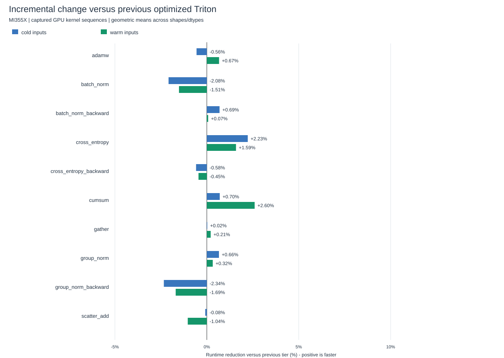

Path-by-path lowering design and diffs | Incremental patch | Full branch patch | Validation
Default-disabled AMD optimization tiers now derive wave layouts, legal workgroups and tile budgets from device properties. Runtime and compiler source were cleaned up. Numerical/GPU validation uses MI355X; other wave32/wave64 devices have structural CPU coverage only. Approximate math remains a separate option and is disabled in these comparisons.
Adam/gather codegen candidates were rejected for lacking aggregate gains. FP32/smaller scan layouts were rejected; a guarded BF16 wide-scan candidate remains. Outer-row alternatives and atomic tuning are retained for measurement. The captured candidate protocol removes CPU launch gaps for selected reduction/atomic paths. Forward Welford/flat paths retain the previous selection policy after a broad-policy trial regressed them. No model identities control dispatch.
Captured GPU kernel sequences exclude Python dispatch. Inline graph replay is measured separately and may include CPU launch gaps. Cache preparation/mutation restoration occur outside timed intervals. Three accuracy seeds, fifteen rotating rounds, five invocations. GEMM/convolution are ATen. FP32 long-scan tolerance is 2e-4 absolute/1e-4 relative; probes/tests also compare with original compiled and FP64 references. Negative values are regressions; gains below a few percent need caution.
new_ops_final | reference_final | legacy_final
| Operation | Cases | Warm runtime saved vs regular | vs previous tier | vs FlyDSL |
|---|---|---|---|---|
| adamw | 8 | +1.47% | +0.67% | +0.88% |
| batch_norm | 8 | +2.96% | -1.51% | +2.23% |
| batch_norm_backward | 8 | +4.16% | +0.07% | -1.27% |
| cross_entropy | 8 | +18.68% | +1.59% | +4.35% |
| cross_entropy_backward | 8 | +18.21% | -0.45% | -1.55% |
| cumsum | 8 | +13.59% | +2.60% | +4.40% |
| gather | 8 | +1.77% | +0.21% | -0.59% |
| group_norm | 8 | +3.27% | +0.32% | -1.99% |
| group_norm_backward | 8 | +2.17% | -1.69% | -3.83% |
| scatter_add | 8 | +2.48% | -1.04% | +24.52% |
New-operation paired CSV | Per-operation summary
Twelve previously validated single-GPU models, existing batch sizes, full forward/backward/SGD step, AMP BF16, no checkpoint, one GPU, serial compilation. This is a representative cohort, not a rerun of the complete original model manifest. The synthetic objective and SGD protocol match the prior suite; AdamW is an operation benchmark only. Only successful eager-validated runs with no timed recompilation enter comparisons.
Training runtime graph | Full-model CSV | Full-model summary
| Model | Regular ms | Previous tier ms | New ms | New runtime saved vs previous |
|---|---|---|---|---|
| Qwen/Qwen3-8B | 96.470 | 95.537 | 95.562 | -0.03% |
| BertForMaskedLM | 10.532 | 10.697 | 10.751 | -0.50% |
| DistillGPT2 | 5.536 | 5.474 | 5.457 | +0.30% |
| MBartForCausalLM | 12.099 | 11.676 | 12.564 | -7.60% |
| T5Small | 9.656 | error | error | not comparable |
| TrOCRForCausalLM | 77.052 | 75.327 | 75.007 | +0.42% |
| XGLMForCausalLM | 29.729 | error | error | not comparable |
| Qwen/Qwen3-0.6B | 19.583 | 19.866 | 21.535 | -8.40% |
| mobilenetv3_large_100 | 87.891 | error | error | not comparable |
| convnext_base | 126.306 | 125.158 | 125.544 | -0.31% |
| resnet152 | 52.987 | error | error | not comparable |
| vit_base_patch16_224 | 35.141 | 34.752 | 34.741 | +0.03% |
Earlier exploratory directories, the broad-policy trial, and the failed nested-graph probe are excluded. The ROCm nested replay issue was caught with mutation tests; final replay timing uses the inline path. Timing protocols differ from older reports, so use paired values within these fresh runs. Branch flydsl/triton-hillclimb; changes remain uncommitted for review.